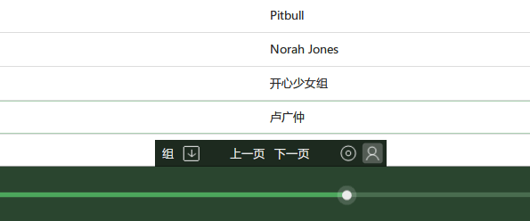
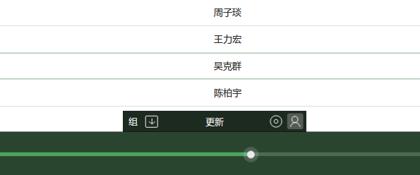
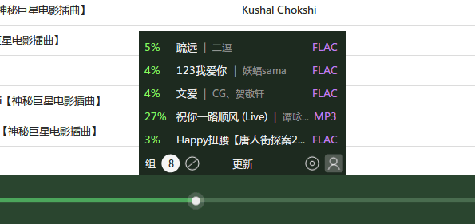
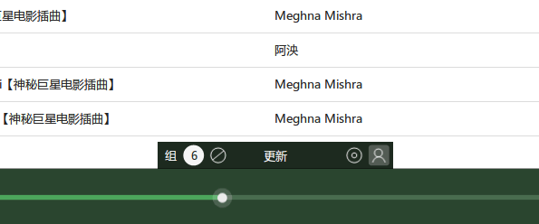

播放列表工具栏
6.1.4.5 版时改成默认只有在网络播放列表（如网搜）时才启用，要全局启用，请到 "foobox设置 --> 播放列表视图" 页面进行设置。
正常情况下它隐藏在播放列表的中底部，当鼠标移动到小三角形附近区域悬停一下就能呼出。
【四个常规按钮功能】
从左到右四个按钮的功能分别是：
【网络功能播放列表的按钮功能】
* 对于在搜索框里网络搜索生成播放列表，工具栏多了翻页按钮，对搜索进行翻页。
* 对于在搜索框里生成的榜单或电台播放列表，工具栏多了更新按钮，点击更新榜单或电台歌曲。
【工具栏里的下载面板功能】
* 工具栏集成了下载面板，下载网络歌曲时工具栏自动显示（不可隐藏），默认情况下下载面板也一起显示。
* 下载时工具栏有两个功能按钮，一个是显示队列数量+显隐下载面板功能，另一个是取消下载按钮。
* 点击下载队列数量可以隐藏/显示下载面板，下图是面板隐藏起来的效果，foobox 会记忆是否显示面板。
---The End---